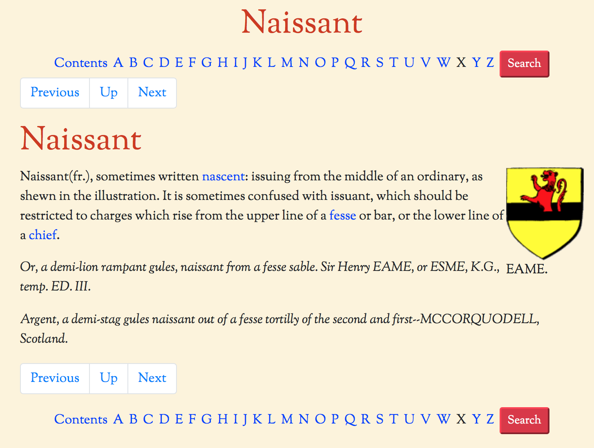
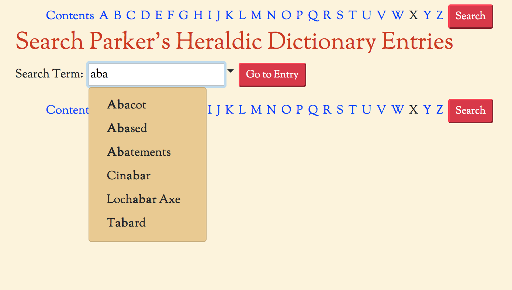
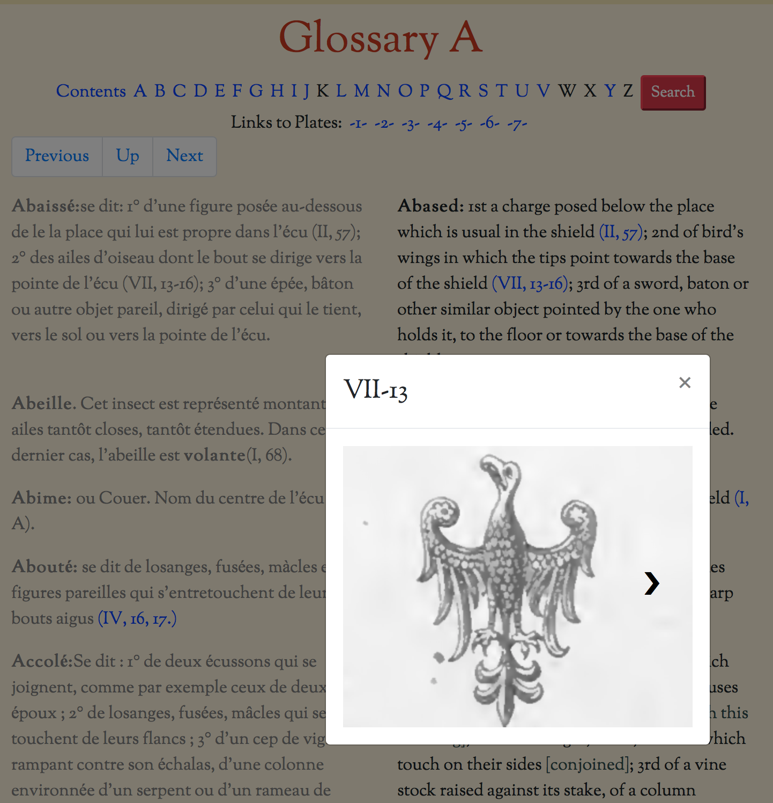

The reference section section contains a small selection of Heraldry Reference works that are in the public domain. I have cleaned up and reformatted the entries to make them more easily searchable and readable, a typical entry is shown below.
This is an example from the reference work "Parker's Heraldic Dictionary". The entry itself has link to other cross references and has (mostly!) been proof read and corrected from the PDF versions available on archive.org.
The navigation buttons in white will take you to the "Next" and "Previous" entries, in alphabetical order, and "Up" will take you to a list of all entries that begin with the same letter.
The line of letters at the top of the entry allow you go directly to the list of entries beginning with each letter (if the letter is shown in black then there are no entries beginning with that letter). The "Contents" link will take you to the front page of the book, where you can also find the introduction and any other "front matter". The "Search" button will take you to the following page:
This allows you to search through all of the alphabetical entries in the book (note that it is not a full text search). Typing into the search box will bring up a list of all the entries that contain that string of characters anywhere in the name. Click on an entry and then the "Go To Page" button to open the corresponding page.
The other alphabetically organised reference works work in a similar way.
There is an additional feature of the bilingual version of Reitstap's Armorial front matter - if you click on one of the image links this will bring up a "lightbox" version of the referenced image. If there is more than one such image being referenced then navigation arrows will appear when the mouse is over the image allowing you to switch between all the referenced images. See the screenshot below for an example.
